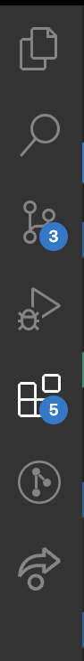
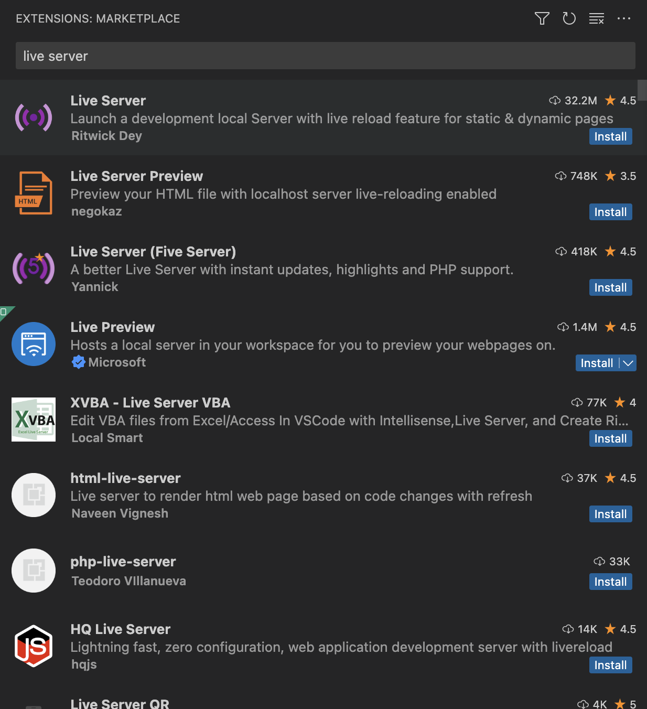
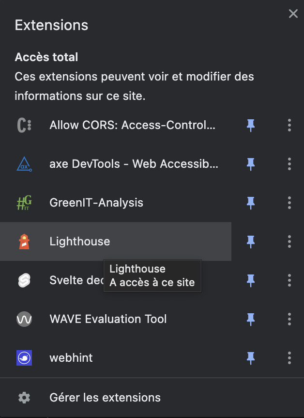
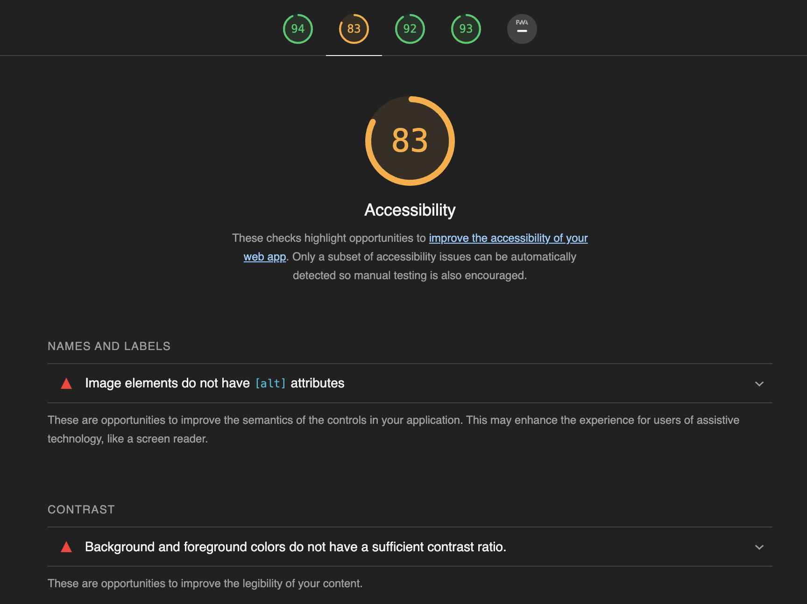
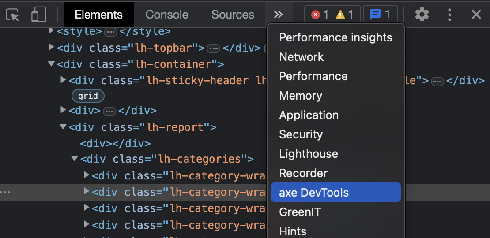
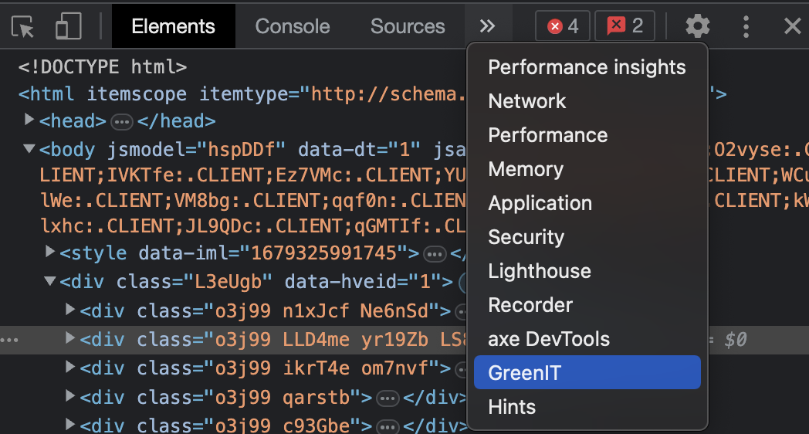
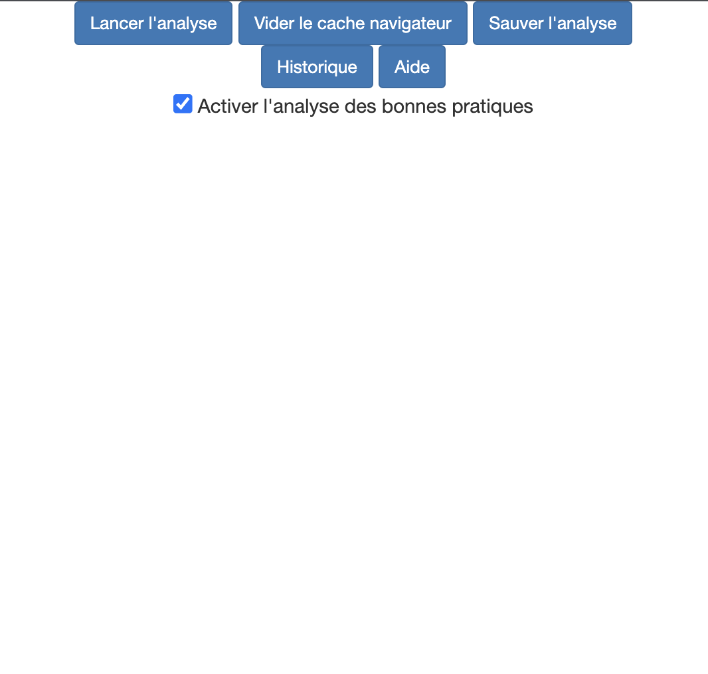

Vous allez apprendre à :
- Utiliser un lecteur d'écran
- Identifier des problèmes d'accessibilité via des outils d'audit
- Corriger certaines erreurs d'accessibilité
- Identifier des problèmes d'éco-conception via des outils d'audit
- Corriger certaines erreurs d'eco-conception
Outils nécessaires pour réaliser les exercices
- Google Chrome
- VSCode
- VSCode Live Server
- Lighthouse
- Wave
- Axe DevTools
Pour découvrir l'accessibilité par la pratique, nous vous proposons
Suivez scrupulesement les intructions suivantes pour être sûr de pouvoir réaliser les exercices sans rencontrer de problème.
Google Chrome
Vous aurez besoin du navigateur web Google Chrome pour réaliser les exercices car c'est au travers d'extensions Google Chrome que vous pourrez tester un lecteur d'écran et que vous pourrez mener des audits d'accessibilité. Si vous ne l'avez pas sur votre PC, rendez-vous ici pour l'installer.
VS Code
Une fois les problèmes d'accessibilité identifiés, vous aurez à les corriger en modifiant le code du projet dans VS Code. Vous pouvez télécharger VS Code ici.
VS Code Live Server
Pour pouvoir lancer le projet qui servira d'exemple et mener des audits d'accessibilité, il est nécessaire d'installer l'extension VS Code Live Server. Pour ce faire, commencez par lancer VS Code. Ensuite, dans le menu de gauche de VS Code, sélectionnez l'onglet Extensions.

Dans la barre de recherche, saisissez Liver Server et installez la première extension proposée.

Lighthouse
Lighthouse est une extension qui permet de mener différents types d'audits sur un site web, incluant notamment un certain nombres de vérifications relatives à l'accessibilité (mais aussi aux performances, au SEO, etc).
Lighthouse est nativement disponible dans Google Chrome. Pour accéder à l'outil, rendez-vous en haut à droite de votre navigateur, sur le menu Extensions.

Ensuite, cliquez sur Lighthouse.

Une fenêtre s'affiche alors et vous pouvez lancer un audit lighthouse en cliquant sur le bouton Generate report.

Les résultats de l'audit s'afficheront dans un nouvel onglet de votre navigateur.

WAVE Evaluation Tool
WAVE Evaluation Tool est un outil permettant de lancer des audits d'accessibilité dans un navigateur. Il est disponible au travers d'une extension de navigateur.
Vous pouvez ajouter l'extension à Google Chrome à partir du lien suivant : WAVE Evaluation Tool
Pour accéder à l'outil, rendez-vous en haut à droite de votre navigateur, sur le menu Extensions.
Cliquez ensuite sur WAVE Evaluation Tool pour lancer un audit.

Les résultats s'afficheront ensuite directement sur la page web :

Axe DevTools
Axe DevTools est un outil permettant de lancer des audits d'accessibilité dans un navigateur. Il est disponible au travers d'une extension de navigateur.
Vous pouvez ajouter l'extension à Google Chrome à partir du lien suivant : Axe DevTools
Pour y accéder, ouvrez les DevTools du navigateur (appuyez sur F12).
Ensuite, dans le menu suivant, accéder à l'onglet axe DevTools.

Pour lancer un audit sur la page entière, cliquez sur le bouton Scan ALL of my page:

Les resultats s'affichent ensuite dans les DevTools.
Screen Reader
L'extension de navigateur Screen Reader est un lecteur d'écran pour navigateur. Un lecteur d'écran est un logiciel d'assistance technique destiné aux personnes « empêchées de lire » (aveugles, fortement malvoyantes, dyslexiques, dyspraxiques...) : il retranscrit par synthèse vocale et/ou sur un afficheur braille ce qui est affiché sur l'écran d'un ordinateur tant en termes de contenu que de structure.
Vous pouvez ajouter l'extension à Google Chrome à partir du lien suivant : Screen Reader
Pour l'activer, il vous faudra ensuite passer par le menu Extensions puis Gérer les extensions de Google Chrome.
⚠ Attention ! Dès lors que vous activez l'extension, toute action que vous ferez dans votre navigateur risque d'entrainer la prise de parole du lecteur d'écran, donc mettez vos écouteurs.
Vous allez utiliser un projet exemple pour découvrir l'accessibilité par la pratique, en menant des audits avec les outils installés précédement et vous pourrez appliquer des corrections suite aux retours des audits.
Télécharger le projet
Le projet exemple est à télécharger sur le lien suivant :
Récupérez le .zip puis dézippez le dans le répertoire de votre choix sur votre PC.
Lancer le projet en local
Pour lancer le projet en local, sur votre PC, réalisez les opérations suivantes :
Vous allez à présent vous mettre à la place d'une personne non-voyante utilisant un site internet. Vous allez avoir à remplir le formulaire du connexion du projet exemple (utilisateur + mot de passe) et vous tenterez de vous connecter via le bouton Se connecter. Puisque vous ne verez pas l'écran, vous serez guidé par le lecteur d'écran.
Activez le lecteur d'écran
Mettez vos écouteurs ou votre casque pour ne pas gêner vos voisins.
Activer l'extension *Screen Reader.
Accédez à la page de connexion
Dans votre navigateur accéder à la page de connexion du projet.
À l'aveugle
Saisissez le masque qui vous a été donné, portez-le et essayez de vous connecter. Etant hôté de la vue, vous serez contraint d'utiliser uniquement les touches du clavier : tabulation, entrée, ...
Les identifiants de connexion sont les suivants :
- Utilisateur : to do
- Mot de passe : to do
C'est parti !
Désactivez le lecteur d'écran quand vous avez réussi.
Vous l'aurez-vu avec le lecteur d'écran, le formulaire de connexion n'est pas accessible du tout, impossible de se connecter en utilisant seulement son clavier.
Vous allez maintenant rendre cette page beaucoup plus accessible à tous. Pour ce faire, lancez les outils d'audit d'accessibilité installés précédemment, identifiez les problèmes et corrigez les directement en modifiant le code de la page.
Répétez l'opération jusqu'à ce que les 3 outils d'audit ne remontent plus aucune erreur.
Vous allez à présent vous mettre à la place d'une personne non-voyante naviguant sur un blog.
Activez le lecteur d'écran
Mettez vos écouteurs ou votre casque pour ne pas gêner vos voisins.
Activer l'extension *Screen Reader.
Accédez à la page de blog
Dans votre navigateur accéder à la page de blog.
À l'aveugle
Saisissez le masque qui vous a été donné, portez-le et tentez d'accéder à l'article TO DO . Etant hôté de la vue, vous serez contraint d'utiliser uniquement les touches du clavier : tabulation, entrée, ...
C'est parti !
Désactivez le lecteur d'écran quand vous avez réussi.
Vous allez maintenant rendre cette page beaucoup plus accessible à tous. Pour ce faire, lancez les outils d'audit d'accessibilité installés précédemment, identifiez les problèmes et corrigez les directement en modifiant le code de la page.
Répétez l'opération jusqu'à ce que les 3 outils d'audit ne remontent plus aucune erreur.
Outils nécessaires pour réaliser les exercices
- GreenIT Analysis
GreenIT Analysis
GreenIT Analysis est un outil permettant de lancer des audits d'accessibilité dans un navigateur. Il est disponible au travers d'une extension de navigateur.
Vous pouvez ajouter l'extension à Google Chrome à partir du lien suivant : GreenIT Analysis
Pour y accéder, ouvrez les DevTools du navigateur (appuyez sur F12).
Ensuite, dans le menu suivant, accéder à l'onglet axe DevTools.

Pour lancer un audit sur la page entière, cliquez sur le bouton Lancer l'analyse, et cochez la case Activer l'analyse des bonnes pratiques:

Les resultats s'affichent ensuite dans les DevTools.
Testez l'extension GreenIT Analysis sur différents site web et analysez les résultats.
Exemples de site web à analyser :
- IMT Atlantique
- Ali Express
- ...
Prenez le temps de lire chacune des bonnes pratiques d'éco-conception en cliquant sur chacune d'entre elles.